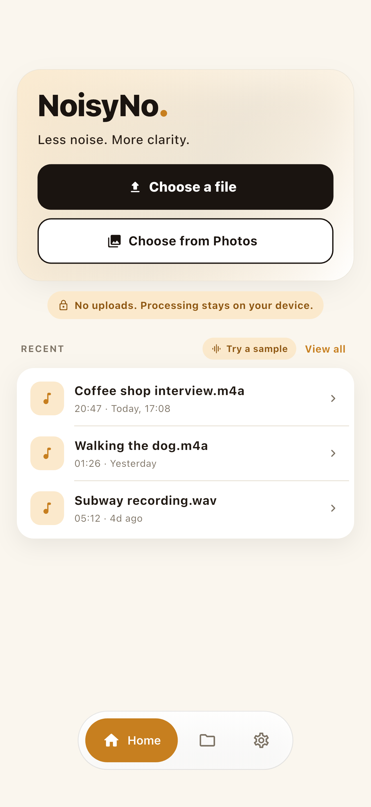
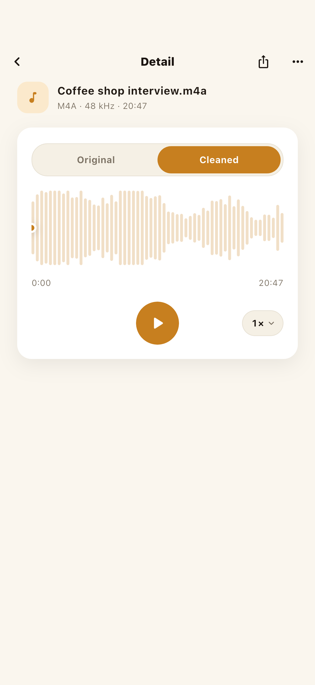

NoisyNo로 회의 녹음 정리하기 — 5단계
Zoom, Teams, Google Meet으로 한 회의든, 회의실에서 폰으로 녹음한 회의든 흐름은 같습니다. 내보내기 → 선택 → 정리 → 비교 → 공유. 계정도, 업로드도 없습니다.
녹음을 폰으로 가져오기
회의를 내보내세요. Zoom과 Teams는 MP4 영상이나 M4A/MP3 오디오로 저장해 주고, 녹음 앱은 이미 기기에 저장합니다. 파일을 폰에 저장하면 됩니다. 변환은 필요 없습니다. NoisyNo는 일반적인 오디오 형식을 읽고, 회의 영상에서 오디오를 바로 추출할 수 있습니다.

회의 파일 고르기
Files(파일) 탭에서 이름으로 검색하거나 최근 녹음을 넘겨 회의 파일을 고르세요. 앱은 선택한 파일 하나에만 접근합니다. 먼저 몇 초 정도 미리 들어 보세요. 꾸준한 팬 소음과 울림이 있는 방은 정리되는 방식이 달라서, 결과에 대한 기대치를 잡는 데 도움이 됩니다.

정리 실행하기 (100% 기기 안에서)
Clean(정리)을 누르면 앱에 내장된 모델이 목소리 밑에 깔린 꾸준한 소음을 줄입니다. 업로드 대기 없이 모든 처리가 기기 안에서 이루어집니다. 회의가 길수록 시간도 더 걸립니다. 다른 앱으로 전환하면 처리가 멈출 수 있으니 작업 중에는 앱을 화면에 띄워 두세요.

돌려 보기 전에 비교하기
Original / Cleaned(원본 / 클린) 토글로 같은 순간을 비교하세요. 누군가 작게 말하거나 팬 소음 위로 말하는 부분을 들어 보면 목소리가 자연스럽게 남았는지 알 수 있습니다. 정리된 버전이 너무 많이 깎였더라도 원본은 그대로입니다. 이 과정에서 원본 파일을 덮어쓰는 일은 없습니다.

NoisyNo — 음성 노이즈 제거 앱
녹음과 영상 오디오에서 팬 소음, 히스 잡음, 바람 소리, 에어컨 소리, 실내 웅웅거림을 줄여 주는 오프라인 음성 노이즈 제거 앱입니다. 파일 업로드 없이 폰 안에서 처리합니다.
회의 오디오를 기기 안에 두어야 하는 이유
회의 녹음은 우리가 만드는 파일 중 가장 민감한 것에 속합니다. 계약 조건, 고객 이름, 연봉 이야기, 법무나 인사 관련 논의가 담기니까요. "무료 온라인 노이즈 제거" 도구는 그 대화 전체를 남의 서버에 올립니다. 온디바이스 도구는 어디에도 보내지 않으며, 이는 내부 전략 회의, NDA(비밀유지계약)가 걸린 회의, 법무·의료·인사 관련 대화에서 특히 중요합니다.
회의 전체를 업로드
처리 전에 녹음 전체가 웹사이트로 전송됩니다. 어디에 저장되는지, 누가 접근할 수 있는지, 실제로 언제 삭제되는지 믿고 맡겨야 합니다.
폰 안에서 처리
NoisyNo는 정리를 기기에서 직접 실행합니다. 선택한 회의 파일도, 정리된 결과도 GrayForge 서버에 업로드되지 않습니다.
실제로 제거할 수 있는 회의 소음
온디바이스 노이즈 제거가 가장 잘하는 것은 꾸준히 깔리는 배경 소음, 즉 모든 목소리 밑에 깔린 일정한 소리입니다. 회의에서 흔한 원인은 다음과 같습니다.
- 노트북과 컴퓨터 팬
- 에어컨과 공조 설비의 웅웅거림
- 벽이 단단한 회의실의 웅웅거림과 울림
- 저가 헤드셋이나 노트북 마이크의 히스 잡음
- 전기 험 — 50/60 Hz 전원 잡음
- 꾸준한 거리 소음이나 사무실 소음
완전히 해결할 수 없는 것은 갑작스러운 일회성 소리입니다. 문 닫는 소리, 기침, 여러 사람이 동시에 말하는 소리 같은 것이죠. 이런 소리는 일정하지 않아서 분리하기가 훨씬 어렵습니다.
알아 둘 점: "파일 업로드 없음"과 "네트워크 없음"은 다릅니다
회의 녹음과 정리된 결과는 GrayForge 서버에 업로드되지 않습니다. NoisyNo의 개인정보 처리방침에 따라 파일은 기기에서 처리됩니다. 하지만 이것이 앱이 네트워크를 전혀 쓰지 않는다는 뜻은 아닙니다. 안정성을 위해 제한적인 진단 기능(Firebase Crashlytics, Analytics, Remote Config)이 실행될 수 있으며, 여기에는 파일 이름이나 오디오가 포함되지 않습니다.
NoisyNo는 회의를 처리하기 위해 업로드하지 않지만, 안정성을 위한 진단 데이터가 말 그대로 0인 것은 아닙니다. 파일 처리와 진단 데이터는 별개의 범위로 생각하세요.
자주 묻는 질문
회의 녹음을 웹사이트에 올리지 않고 정리할 수 있나요?
네. NoisyNo는 회의 오디오를 폰 안에서 처리하므로 파일이 GrayForge 서버에 업로드되지 않습니다. 녹음이 기기 밖으로 나가면 안 되는 기밀 회의라면 이 점이 중요합니다.
Zoom이나 Teams 녹음도 되나요?
네. Zoom, Teams, Google Meet이나 녹음 앱에서 녹음을 내보내 폰에 저장하면 NoisyNo로 오디오를 정리할 수 있습니다. 일반적인 오디오 파일을 바로 읽고, MP4나 MOV 회의 영상에서 오디오 트랙만 가져올 수도 있습니다.
실제로 어떤 회의 소음을 제거할 수 있나요?
꾸준히 깔리는 배경 소음에 가장 효과적입니다. 노트북 팬, 에어컨과 공조 설비의 웅웅거림, 방 안의 험, 낮은 히스 잡음 등입니다. 문 닫는 소리나 한 번의 기침 같은 갑작스러운 소리는 일정하지 않아서 어떤 노이즈 제거 도구로도 지우기 어렵습니다.
오디오 파일만이 아니라 회의 영상의 소리도 정리할 수 있나요?
네. 지원되는 영상 파일이라면 NoisyNo가 오디오 트랙을 추출해 잡음을 제거하고, 정리된 오디오를 저장하거나 공유할 수 있습니다.
기밀 회의나 내부 회의에 써도 안전한가요?
녹음과 결과 파일은 GrayForge 서버에 업로드되지 않으며 계정도 필요 없습니다. 앱 안정성을 위해 Firebase 기반의 제한적인 진단 정보가 처리될 수 있지만, 여기에는 파일 이름이나 오디오 내용이 포함되지 않습니다. 녹음과 데이터에 관한 소속 조직의 정책은 항상 따르세요.
NoisyNo는 무료인가요? iPhone과 Android에서 쓸 수 있나요?
NoisyNo는 무료로 다운로드할 수 있고 계정, 광고, 파일 업로드가 없으며, 노이즈 제거는 무료로 쓸 수 있습니다. 라우드니스 정규화는 1회성 인앱 구매로 여는 Pro 기능입니다. iPhone은 App Store, Android는 Google Play에서 받을 수 있습니다.
다음 회의 녹음은 듣기 편하게.
설치한 뒤 첫 회의 녹음을 정리하는 데는 3분 정도면 됩니다. 궁금한 점이 있으면 앱을 만든 사람이 직접 답해 드립니다.
grayforge.dev@gmail.com